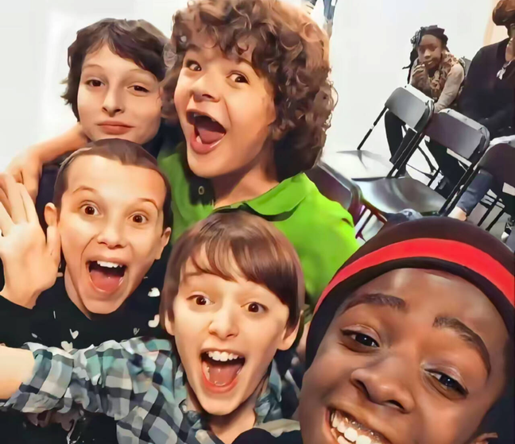

The Vanishing of Will Byers
A creature escapes from Hawkins Lab after a Department of Energy experiment fails. It attacks young Will Byers on his way home. His mother, Joyce, reports him missing, and Chief Hopper begins the investigation. A distraught Joyce receives a strange phone call. A diner owner takes in a mysterious girl, Eleven, but is killed by DOE agents. Eleven flees and encounters Mike, Dustin, and Lucas, who are searching for Will.